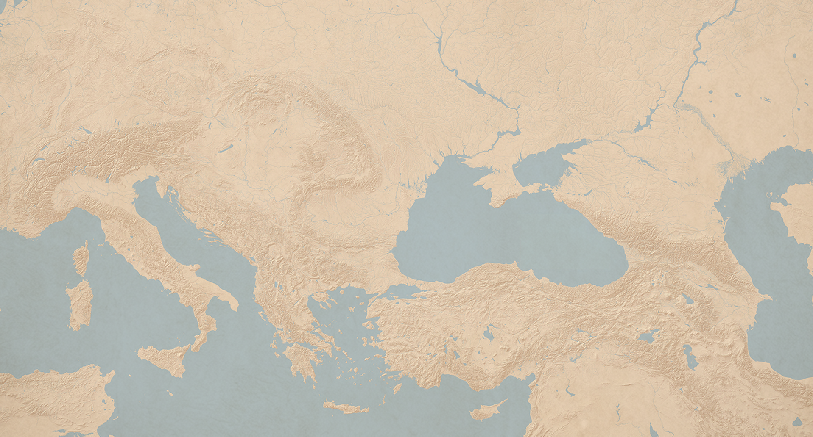

Soru metni yükleniyor...
Soruda belirtilen bölgeyi dilsiz harita üzerinde bulunuz ve açılan bilgi kartındaki açıklamaları dikkatle inceleyiniz.

Soru metni yükleniyor...
1683 Viyana Kuşatması'ndan 1774 Küçük Kaynarca Antlaşması'na kadar geçen süreçte Osmanlı Devleti'nin siyasi ve askerî mücadele alanlarını dilsiz harita üzerinde başarıyla konumlandırdınız.
Bu etkinlikte, XVII ve XVIII. yüzyıl Osmanlı siyasi mücadelelerini dilsiz harita üzerinde göstererek öğreneceksiniz.